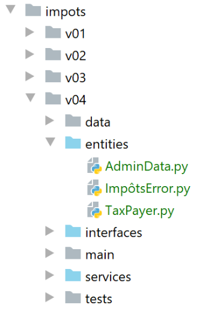

15. 应用练习 - 第 4 版

我们在此重述第 |第 3 版| 段落中描述的练习，并使用类和接口来处理它。我们将编写两个应用程序：
应用程序 1 如下：

主脚本 [main] 将实例化 [dao] 层和 [métier] 层：
- [dao] 层将负责管理存储在文本文件中（后续将存储在数据库中）的数据；
- [métier]层负责计算税款；
在此应用程序中，用户无需进行任何操作：纳税人的数据将从一个文本文件中获取，该文件的名称将提供给模块 [main]。
在应用程序2中，用户将通过键盘输入纳税人数据。此时架构将演变为如下形式：

- [dao]层（数据访问对象）负责访问外部数据
- [métier]层负责处理业务问题，此处即税款计算。该层不处理数据。数据可能来自两个来源：
- [dao]层用于持久化数据；
- [ui] 层用于处理用户提供的数据。
- [ui] 层（用户界面）负责与用户的交互；
- [main] 作为总协调者；
接下来，将分别通过一个类来实现 [dao]、[métier] 和 [ui] 这三个层。 [métier] 和 [dao] 这两个层在两个应用程序中是相同的。这就是为什么我们将它们合并到同一版本的练习中。
15.1. 版本 4 – 应用程序 1
版本 4 用于计算存储在文本文件中的一份纳税人列表的税款。其架构如下：

15.1.1. 实体

实体是数据类。其作用是封装数据，并提供用于验证数据有效性的getter/setter方法。 实体在各层之间进行传递。同一个实体可以从 [ui] 层传递到 [dao] 层，反之亦然。
15.1.1.1. [ImpôtsError]类
我们将使用一个专有异常类：
# -------------------------------
# 异常类
from MyException import MyException
class ImpôtsError(MyException):
pass
一旦 [métier] 和 [dao] 层遇到问题，它们就会抛出此异常。该类继承自 [MyException] 类。因此，其使用方式如下：[raise ImpôtsError(code_erreur, msg_erreur)]。
15.1.1.2. [AdminData] 类
[AdminData] 类封装了用于计算税款的常量：
from BaseEntity import BaseEntity
# 税务管理数据
class AdminData(BaseEntity):
# 从类状态中排除的键
excluded_keys = []
# 允许的键
@staticmethod
def get_allowed_keys() -> list:
return [
"limites",
"coeffr",
"coeffn",
"plafond_qf_demi_part",
"plafond_revenus_celibataire_pour_reduction",
"plafond_revenus_couple_pour_reduction",
"valeur_reduc_demi_part",
"plafond_decote_celibataire",
"plafond_decote_couple",
"plafond_impot_couple_pour_decote",
"plafond_impot_celibataire_pour_decote",
"abattement_dixpourcent_max",
"abattement_dixpourcent_min"
]
- 第 5 行：类 [AdminData] 继承了 |BaseEntity| 段落中描述的类 [BaseEntity]。需要注意的是，继承类 [BaseEntity] 的类必须定义：
- 一个类属性 [excluded_keys]（第 7 行），用于列出对象转换为字典时被排除的属性；
- 一个静态方法 [get_allowed_keys]（第 10-26 行），用于返回当对象使用字典初始化时所接受的属性列表；
我们未使用设置器来验证用于初始化 [AdminData] 对象的数据有效性。因为该对象是唯一的，且由配置定义，因此不太可能出错。
15.1.1.3. [TaxPayer]类
[TaxPayer] 类将建模一个纳税人：
# 导入
from BaseEntity import BaseEntity
from ImpôtsError import ImpôtsError
# 一名纳税人
class TaxPayer(BaseEntity):
# 建模纳税人
# ID：标识符
# 已婚：是 / 否
# 子女：子女数量
# 工资：其年薪
# 税款：应缴税额
# 附加税：应缴税款的附加税
# 减免：应缴税款的减免额
# 减免：应缴税款的减免额
# 税率：纳税人的税率
# 从类报表中排除的键
excluded_keys = []
# 允许的键
@staticmethod
def get_allowed_keys() -> list:
return ['id', 'marié', 'enfants', 'salaire', 'impôt', 'surcôte', 'décôte', 'réduction', 'taux']
# 属性
@property
def marié(self) -> str:
return self.__marié
@property
def enfants(self) -> int:
return self.__enfants
@property
def salaire(self) -> int:
return self.__salaire
@property
def impôt(self) -> int:
return self.__impôt
@property
def surcôte(self) -> int:
return self.__surcôte
@property
def décôte(self) -> int:
return self.__décôte
@property
def réduction(self) -> int:
return self.__réduction
@property
def taux(self) -> float:
return self.__taux
# 设置器
@marié.setter
def marié(self, marié: str):
ok = isinstance(marié, str)
if ok:
marié = marié.strip().lower()
ok = marié == "oui" or marié == "non"
if ok:
self.__marié = marié
else:
raise ImpôtsError(31, f"l'attribut marié [{marié}] doit avoir l'une des valeurs oui / non")
@enfants.setter
def enfants(self, enfants):
# 子女数必须为大于等于0的整数
try:
enfants = int(enfants)
erreur = enfants < 0
except:
erreur = True
if not erreur:
self.__enfants = enfants
else:
raise ImpôtsError(32, f"L'attribut enfants [{enfants}] doit être un entier >=0")
@salaire.setter
def salaire(self, salaire):
# 工资必须是 >=0 的整数
try:
salaire = int(salaire)
erreur = salaire < 0
except:
erreur = True
if not erreur:
self.__salaire = salaire
else:
raise ImpôtsError(33, f"L'attribut salaire [{salaire}] doit être un entier >=0")
@impôt.setter
def impôt(self, impôt):
# 税额必须为大于等于0的整数
try:
impôt = int(impôt)
erreur = impôt < 0
except:
erreur = True
if not erreur:
self.__impôt = impôt
else:
raise ImpôtsError(34, f"L'attribut impôt [{impôt}] doit être un nombre >=0")
@décôte.setter
def décôte(self, décôte):
# 折扣必须为大于等于0的整数
try:
décôte = int(décôte)
erreur = décôte < 0
except:
erreur = True
if not erreur:
self.__décôte = décôte
else:
raise ImpôtsError(35, f"L'attribut décôte [{décôte}] doit être un nombre >=0")
@surcôte.setter
def surcôte(self, surcôte):
# 附加费必须为大于等于0的整数
try:
surcôte = int(surcôte)
erreur = surcôte < 0
except:
erreur = True
if not erreur:
self.__surcôte = surcôte
else:
raise ImpôtsError(36, f"L'attribut surcôte [{surcôte}] doit être un nombre >=0")
@réduction.setter
def réduction(self, réduction):
# 附加费必须为大于等于0的整数
try:
réduction = int(réduction)
erreur = réduction < 0
except:
erreur = True
if not erreur:
self.__réduction = réduction
else:
raise ImpôtsError(37, f"L'attribut réduction [{réduction}] doit être un nombre >=0")
@taux.setter
def taux(self, taux):
# 税率必须为 >=0 的实数
try:
taux = float(taux)
erreur = taux < 0
except:
erreur = True
if not erreur:
self.__taux = taux
else:
raise ImpôtsError(38, f"L'attribut taux [{taux}] doit être un nombre >=0")
注：
- 类 [TaxPayer] 封装了一个纳税人；
- 第 7 行：类 [TaxPayer] 继承自类 [BaseEntity]。因此，它的标识符为 [id]；
- 第20行：[AdminData]对象的状态中未排除任何属性；
- 第22-25行：类的属性。这些属性在第9-17行中进行了详细说明；
- 第27-58行：类属性的getter方法；
- 第 60-161 行：类属性的 setter 方法。需要指出的是，与简单的字典相比，封装数据的类具有的优势在于，类可以通过其 setter 方法验证属性的有效性；
15.1.2. [dao]层
我们将把各层的实现集中到 [services] 文件夹中。这些类将实现 [interfaces] 文件夹中定义的接口。

15.1.2.1. 接口 [InterfaceImpôtsDao]
[dao] 层将实现以下 [InterfaceImpôtsDao] 接口（文件 InterfaceImpôtsDao.py）：
# 进口
from abc import ABC, abstractmethod
# 接口 IImpôtsDao
from AdminData import AdminData
class InterfaceImpôtsDao(ABC):
# 税率区间列表
@abstractmethod
def get_admindata(self) -> AdminData:
pass
# 纳税人数据列表
@abstractmethod
def get_taxpayers_data(self) -> dict:
pass
# 税额计算结果记录
@abstractmethod
def write_taxpayers_results(self, taxpayers_results: list):
pass
该接口定义了三个方法：
- [get_admindata]：该方法用于获取税率区间数组。需注意，此处未提供获取这些数据的具体方式。后续实现中，这些数据将首先从文本文件中获取，随后从数据库中获取。具体如何适应数据存储模式，将由实现该接口的类自行处理。 因此，我们将有一个类用于从文本文件中获取税率区间，另一个类用于从数据库中获取。这两个类都将实现方法 [get_admindata]；
- [get_taxpayers_data]：用于获取纳税人数据的方法。同样，我们不指定数据的具体来源。此处仅处理数据位于文本文件的情况；
- [write_taxpayers_results]：用于将税额计算结果持久化的方法。我们同样不指定数据存储位置，仅处理结果存储在文本文件中的情况。参数 [taxpayers_results] 将是待持久化的结果列表；
15.1.2.2. 类 [AbstractImpôtsDao]
[dao] 层将由两个类实现：
- 其中一个类将从文本文件中读取数据（纳税人、计算结果、税率区间）；
- 另一个将从文本文件中提取数据（纳税人、计算结果），并从数据库中提取税率区间；
这两个类仅在税率档次的处理方式上有所不同。纳税人数据和税额计算结果将采用相同的方式进行管理。因此，我们将通过父类 [AbstractImpôtsDao] 来统一管理这些数据。而税率档次的特殊处理逻辑，则将由两个子类分别负责：
- 类 [ImpôtsDaoWithAdminDataInJsonFile] 将从 jSON 格式的文本文件中读取税率区间；
- 类 [ImpôtsDaoWithAdminDataInDatabase] 将从数据库中获取税率区间；
父类 [AbstractImpôtsDao] 的定义如下：
# 导入
import codecs
import json
from abc import abstractmethod
from AdminData import AdminData
from ImpôtsError import ImpôtsError
from InterfaceImpôtsDao import InterfaceImpôtsDao
from TaxPayer import TaxPayer
# [dao] 层的基础类
class AbstractImpôtsDao(InterfaceImpôtsDao):
# 纳税人及其税款将保存在文本文件中
# 生成器
def __init__(self, config: dict):
# config[taxpayersFilename]：纳税人文本文件的名称
# config[resultsFilename]：结果文件的名称
# config[errorsFilename]：错误文件名
# 保存参数
self.taxpayers_filename = config.get("taxpayersFilename")
self.taxpayers_results_filename = config.get("resultsFilename")
self.errors_filename = config.get("errorsFilename")
# ------------------
# IImpôtsDao 接口
# ------------------
# 纳税人数据列表
def get_taxpayers_data(self) -> dict:
…
# 写入纳税人税款
def write_taxpayers_results(self, taxpayers: list):
…
# 读取税率档次
@abstractmethod
def get_admindata(self) -> AdminData:
pass
-
第13行：类[AbstractImpôtsDao]实现了接口[InterfaceImpôtsDao]。因此，我们可以看到该接口的三个方法：
- [get_taxpayers_data]：第 31 行；
- [write_taxpayers_results]：第 35 行；
- [get_admindata]：第 40 行。该方法不会由 [AbstractImpôtsDao] 类实现，因此被声明为抽象方法（第 39 行）；
-
第16行：构造函数接收一个[config]字典，其中包含以下信息：
- [taxpayersFilename]：包含纳税人数据的文本文件名；
- [resultsFilename]：用于存储处理结果的文本文件名；
- [errorsFilename]：记录处理 [taxpayersFilename] 文件时遇到的错误的文本文件名；
方法 [get_taxpayers_data] 如下：
# 纳税人数据列表
def get_taxpayers_data(self) -> dict:
# 初始化
taxpayers_data = []
datafile = None
erreurs = []
try:
# 打开数据文件
datafile = open(self.taxpayers_filename, "r")
# 处理文件中的当前行
ligne = datafile.readline()
# 行号
numligne = 0
while ligne != '':
# + 号行
numligne += 1
# 去除空格
ligne = ligne.strip()
# 跳过空行和注释
if ligne != "" and ligne[0] != "#":
try:
# 提取构成纳税人行信息的 4 个字段：id、已婚、子女、工资
(id, marié, enfants, salaire) = ligne.split(",")
# 创建一个新的 TaxPayer
taxpayers_data.append(
TaxPayer().fromdict({'id': id, 'marié': marié, 'enfants': enfants, 'salaire': salaire}))
except BaseException as erreur:
# 记录错误
erreurs.append(f"Ligne {numligne}, {erreur}")
# 读取新的纳税人记录
ligne = datafile.readline()
# 如有错误则记录
if erreurs:
text = f"Analyse du fichier {self.taxpayers_filename}\n\n" + "\n".join(erreurs)
with codecs.open(self.errors_filename, "w", "utf-8") as fd:
fd.write(text)
# 返回结果
return {"taxpayers": taxpayers_data, "erreurs": erreurs}
except BaseException as erreur:
# 抛出异常ImpôtsError
raise ImpôtsError(11, f"{erreur}")
finally:
# 关闭文件
if datafile:
datafile.close()
- 第 4 行：纳税人数据（已婚、子女、工资）将被放入一个 [TaxPayer] 类型的对象列表中；
- 第8-9行：以只读模式打开纳税人文本文件。其内容格式如下：
与先前版本相比：
- [taxpayersFilename]文件中的每一行均以纳税人标识符开头，即一个单纯的编号；
- 允许存在注释和空行；
- 我们将处理错误。因此第17、19和21行应被标记为错误。错误会被记录到一个单独的文件中；
继续分析代码：
- 第 4 行：文本文件中的数据被传输到列表 [taxPayersData] 中；
- 第14-31行：逐行读取纳税人文件；
- 第14行：当读取到空行（没有任何内容——甚至没有换行符\r\n）时，即表示到达文件末尾；
- 第20行：忽略空行和注释。如果某行在去除文本前后空格后，第一个字符是#，则该行为注释；
- 第24行：一条有效的行由四个以逗号分隔的字段组成。我们提取这些字段。如果赋值的数据数量不恰好为四个，则将数据赋值给一个四元元组的操作将失败；
- 第25行：如果从[id, marié, enfants, salaire]中提取的四个字段中有任何一个无效，则[BaseEntity.fromdict]方法将抛出类型为[MyException]的异常；
- 第25-26行：将一个[TaxPayer]对象添加到纳税人列表[taxpayers_data]中；
- 第27-29行：将可能出现的错误累积到[erreurs]列表中。该列表已在第6行创建；
- 第33-36行：遇到的错误列表被记录在文本文件[errorsFilename]中。这些错误分为两类：
- 某行未包含预期数量的字段；
- 该行的信息有误，导致无法构建 [TaxPayer] 对象；
- 第39-41行：捕获所有错误（BaseException），并将其封装为[ImpôtsError]类型上报；
- 第42-45行：无论成功还是失败，如果纳税人文本文件已被打开，则将其关闭；
方法 [write_taxpayers_results] 应生成一个格式为：
[
{
"id": 1,
"marié": "oui",
"enfants": 2,
"salaire": 55555,
"impôt": 2814,
"surcôte": 0,
"taux": 0.14,
"décôte": 0,
"réduction": 0
},
{
"id": 2,
"marié": "oui",
"enfants": 2,
"salaire": 50000,
"impôt": 1384,
"surcôte": 0,
"taux": 0.14,
"décôte": 384,
"réduction": 347
},
{
"id": 3,
"marié": "oui",
"enfants": 3,
"salaire": 50000,
"impôt": 0,
"surcôte": 0,
"taux": 0.14,
"décôte": 720,
"réduction": 0
},
…
]
方法 [write_taxpayers_results] 如下：
# 记录纳税人的税款
def write_taxpayers_results(self, taxpayers: list):
# 将结果写入文件jSON
# 纳税人：对象列表类型 TaxPayer
# (ID、已婚、子女、工资、税款、附加费、减免、减免额、税率)
# 列表 [taxpayers] 已保存到文本文件 [self.taxpayers_results_filename] 中
file = None
try:
# 打开结果文件
file = codecs.open(self.taxpayers_results_filename, "w", "utf8")
# 创建待序列化的列表 jSON
mapping = map(lambda taxpayer: taxpayer.asdict(), taxpayers)
# 序列化 jSON
json.dump(list(mapping), file, ensure_ascii=False)
except BaseException as erreur:
# 以另一种类型重新抛出错误
raise ImpôtsError(12, f"{erreur}")
finally:
# 若文件已打开，则关闭该文件
if file:
file.close()
- 第 2 行：该方法接收纳税人列表 [taxpayers]，并将其以 jSON 格式写入文本文件 [self.taxpayers_results_filename]；
- 第 10 行：创建结果文件 UTF-8；
- 第12行：此处引入函数[map]，其在此处的语法为[map (fonction, liste1)]。 函数 [fonction] 应用于 [liste1] 的每个元素，并生成一个新元素，该元素被添加到列表 [liste2] 中。最后，对于每个 i：
liste2[i]=fonction(liste1[i])
此处，[liste1]即为列表[taxPayers]，该列表包含类型为[TaxPayer]的对象。 函数 [fonction] 在此以一个名为 [lambda] 的函数形式表示，该函数描述了对列表 [taxpayers] 中某个元素 [taxpayer] 进行的转换： 每个 [taxpayer] 元素都被替换为对应的 [taxpayer.asdict()] 字典。最终得到的 [liste2] 列表，即为 [taxpayers] 列表中各元素的字典列表；
- 第12行：函数[map]返回的结果并非列表[liste2]，而是一个类型为[map]的对象。 若要获得 [liste2]，需使用表达式 [list(mapping)]（第 14 行）；
- 第 14 行：列表 [liste2] 以 jSON 格式存储在文件 [self.taxpayers_results_filename] 中；
- 第15-17行：任何类型的异常都会被捕获，并封装为[ImpôtsError]类型的错误，然后重新抛出（第17行）；
- 第19-21行：无论成功还是失败，如果结果文件已被打开，则将其关闭；
15.1.2.3. 类 [ImpôtsDaoWithAdminDataInJsonFile]
类 [ImpôtsDaoWithAdminDataInJsonFile] 将继承自类 [AbstractImpôtsDao]，并实现其父类未实现的方法 [getAdminData]。 它将从文件 jSON 中获取税务管理数据：
{
"limites": [9964, 27519, 73779, 156244, 0],
"coeffr": [0, 0.14, 0.3, 0.41, 0.45],
"coeffn": [0, 1394.96, 5798, 13913.69, 20163.45],
"plafond_qf_demi_part": 1551,
"plafond_revenus_celibataire_pour_reduction": 21037,
"plafond_revenus_couple_pour_reduction": 42074,
"valeur_reduc_demi_part": 3797,
"plafond_decote_celibataire": 1196,
"plafond_decote_couple": 1970,
"plafond_impot_couple_pour_decote": 2627,
"plafond_impot_celibataire_pour_decote": 1595,
"abattement_dixpourcent_max": 12502,
"abattement_dixpourcent_min": 437
}
课程代码[ImpôtsDaoWithAdminDataInJsonFile]如下：
# 导入
import codecs
import json
from AbstractImpôtsDao import AbstractImpôtsDao
from AdminData import AdminData
from ImpôtsError import ImpôtsError
# [dao] 层的实现，其中税务管理数据位于 jSON 文件中
class ImpôtsDaoWithAdminDataInJsonFile(AbstractImpôtsDao):
# 构造函数
def __init__(self, config: dict):
# config[admindataFilename]：包含税务局数据的jSON文件的名称
# config[taxpayersFilename]：纳税人文本文件的名称
# config[resultsFilename]：结果文件 jSON 的名称
# config[errorsFilename]：错误文件名
# 初始化 Parent 类
AbstractImpôtsDao.__init__(self, config)
# 读取税务管理数据
file = None
try:
# 以只读模式打开税务数据文件 jSON
file = codecs.open(config["admindataFilename"], "r", "utf8")
# 将文件 jSON 的内容传输到对象 [AdminData]
self.admindata = AdminData().fromdict(json.load(file))
except BaseException as erreur:
# 以 [ImpôtsError] 类型重新触发错误
raise ImpôtsError(21, f"{erreur}")
finally:
# 若文件已打开，则关闭该文件
if file:
file.close()
# -------------
# 界面
# -------------
# 从税务管理部门获取数据
# 该方法返回一个 [AdminData] 对象
def get_admindata(self) -> AdminData:
return self.admindata
- 第 11 行：类 [ImpôtsDaoWithAdminDataInJsonFile] 继承自类 [AbstractImpôtsDao]。因此，它实现了接口 [InterfaceImpôtsDao]；
- 第 13 行：构造函数接收一个字典作为参数，该字典包含第 14-17 行的信息；
- 第 20 行：初始化父类；
- 第24行：打开税务管理数据的文件jSON；
- 第 25 行：打开税务管理数据的文件 UTF-8；
- 第27行：读取文件内容并将其放入类型为[AdminData]的[self.admindata]对象中。 文件 jSON 中的键必须与 [AdminData] 对象支持的属性相匹配，否则方法 [fromdict] 将抛出异常；
- 第28-30行：异常处理。可能发生的异常在重新抛出之前会被封装在[ImpôtsError]类型中；
- 第 32-34 行：如果文件已被打开，则将其关闭；
- 第 42-43 行：实现 [InterfaceImpôtsDao] 接口中的 [get_admindata] 方法；
15.1.3. [métier] 层
15.1.3.1. [InterfaceImpôtsMétier] 接口
[métier] 层的接口如下：
# 导入
from abc import ABC, abstractmethod
from AdminData import AdminData
from TaxPayer import TaxPayer
# 接口 IImpôtsMétier
class InterfaceImpôtsMétier(ABC):
# 单个纳税人的税款计算
@abstractmethod
def calculate_tax(self, taxpayer: TaxPayer, admindata: AdminData):
pass
- [InterfaceImpôtsMétier]接口定义了一个方法：
- 第12行：方法[calculate_tax]用于计算单个纳税人[taxpayer]的税款。 [admindata] 是封装税务管理数据的 [AdminData] 对象；
- 第12行：方法[calculate_tax]不返回结果。获取的数据（税额、附加费、减免额、减免率、税率）包含在参数[taxpayer]中：调用前这些属性为空，调用后已初始化；
15.1.3.2. 类 [ImpôtsMétier]
类 [ImpôtsMétier] 以如下方式实现了接口 [InterfaceImpôtsMétier]：

该类的方法源自|[impots.v02.modules.impôts_module_02]模块|中的[impôts_module_02]模块。我们仅将方法的参数限制为两个：
- taxpayer(id, 已婚, 子女, 工资, 税款, 减免, 附加费, 减免, 税率)：表示纳税人及其税款的对象；
- admindata：封装税务管理数据的对象；
我们通过一个方法展示所做的这些更改；
# 税款计算 - 第一阶段
# ----------------------------------------
def calculate_tax(self, taxpayer: TaxPayer, admindata: AdminData):
# 纳税人（ID、婚姻状况、子女、工资、税额、减免、附加费、减免、税率）
# 管理数据：税务管理数据
# 含子女的税款计算
self.calculate_tax_2(taxpayer, admindata)
# 结果位于 taxpayer
taux1 = taxpayer.taux
surcôte1 = taxpayer.surcôte
impot1 = taxpayer.impôt
# 无子女情况下的税款计算
if taxpayer.enfants != 0:
# 同一纳税人无子女的税款计算
taxpayer2 = TaxPayer().fromdict(
{'id': 0, 'marié': taxpayer.marié, 'enfants': 0, 'salaire': taxpayer.salaire})
self.calculate_tax_2(taxpayer2, admindata)
# 结果位于 taxpayer2
taux2 = taxpayer2.taux
surcôte2 = taxpayer2.surcôte
impot2 = taxpayer2.impôt
# 应用家庭商数上限
if taxpayer.enfants < 3:
# PLAFOND_QF_DEMI_PART 欧元（前两名子女）
impot2 = impot2 - taxpayer.enfants * admindata.plafond_qf_demi_part
else:
# PLAFOND_QF_DEMI_PART 欧元（前两名子女），后续子女金额加倍
impot2 = impot2 - 2 * admindata.plafond_qf_demi_part - (taxpayer.enfants - 2) \
* 2 * admindata.plafond_qf_demi_part
else:
# 如果纳税人没有子女，则税额2=税额1
impot2 = impot1
# 取税额最高者，并采用相应的税率和附加费
(impot, surcôte, taux) = (impot1, surcôte1, taux1) if impot1 >= impot2 else (
impot2, impot2 - impot1 + surcôte2, taux2)
# 部分结果
taxpayer.impôt = impot
taxpayer.surcôte = surcôte
taxpayer.taux = taux
# 计算可能的减免
self.get_décôte(taxpayer, admindata)
taxpayer.impôt -= taxpayer.décôte
# 计算可能的减税额
self.get_réduction(taxpayer, admindata)
taxpayer.impôt -= taxpayer.réduction
# 结果
taxpayer.impôt = math.floor(taxpayer.impôt)
- 第3行：方法 [calculate_tax] 是接口 [InterfaceImpôtsMétier] 的唯一方法。它接受两个参数：
- [tapPayer]：待计算税款的纳税人；
- [admindata]：封装税务机关数据的对象；
- 计算结果封装在参数 [taxpayer] 中（第 40-50 行）。因此，在调用该方法之前和之后，该对象的内容并不相同；
15.1.4. [dao] 和 [métier] 层的测试

- [TestDaoMétier] 是用于测试 [dao] 和 [métier] 层的 UnitTest 类；
- [config] 是测试配置文件；
[config] 的配置如下：
def configure():
import os
# 步骤 1------
# Python 路径配置
# 该文件的目录
script_dir = os.path.dirname(os.path.abspath(__file__))
# root_dir
root_dir = "C:/Data/st-2020/dev/python/cours-2020/python3-flask-2020/classes"
# 应用程序的绝对依赖项
absolute_dependencies = [
f"{script_dir}/../entities",
f"{script_dir}/../interfaces",
f"{script_dir}/../services",
f"{root_dir}/02/entities",
]
# 设置 syspath
from myutils import set_syspath
set_syspath(absolute_dependencies)
# 步骤 2 ------
# 应用程序配置
config = {
# 应用程序文件的绝对路径
"admindataFilename": f"{script_dir}/../data/input/admindata.json"
}
# 应用程序层的实例化
from ImpôtsDaoWithAdminDataInJsonFile import ImpôtsDaoWithAdminDataInJsonFile
from ImpôtsMétier import ImpôtsMétier
dao = ImpôtsDaoWithAdminDataInJsonFile(config)
métier = ImpôtsMétier()
# 将层实例放入配置中
config["dao"] = dao
config["métier"] = métier
# 生成配置
return config
- 第 4-23 行：配置测试的 Python 路径；
- 第 32-41 行：实例化 [dao] 和 [métier] 层。将它们的引用放入字典 [config] 中；
- 第 44 行：返回该字典；
测试类 [TestDaoMétier] 如下：
import unittest
def get_config() -> dict:
# 应用程序配置
import config
# 加载配置
return config.configure()
class TestDaoMétier(unittest.TestCase):
# 在每个方法执行前运行 test_
def setUp(self) -> None:
# 获取测试配置
config = get_config()
# 存储一些信息
self.métier = config['métier']
self.admindata = config['dao'].get_admindata()
def test_1(self) -> None:
from TaxPayer import TaxPayer
# {'已婚': '是', '子女': 2, '工资': 55555,
# '税款': 2814, '附加费': 0, '减免': 0, '减免额': 0, '税率': 0.14}
taxpayer = TaxPayer().fromdict({"marié": "oui", "enfants": 2, "salaire": 55555})
self.métier.calculate_tax(taxpayer, self.admindata)
# 核对
self.assertAlmostEqual(taxpayer.impôt, 2815, delta=1)
self.assertEqual(taxpayer.décôte, 0)
self.assertEqual(taxpayer.réduction, 0)
self.assertAlmostEqual(taxpayer.taux, 0.14, delta=0.01)
self.assertEqual(taxpayer.surcôte, 0)
def test_2(self) -> None:
from TaxPayer import TaxPayer
# {'已婚': '是', '子女': 2, '工资': 50000,
# '税款': 1384, '附加费': 0, '减免': 384, '减免额': 347, '税率': 0.14}
taxpayer = TaxPayer().fromdict({'marié': 'oui', 'enfants': 2, 'salaire': 50000})
self.métier.calculate_tax(taxpayer, self.admindata)
# 核查
self.assertAlmostEqual(taxpayer.impôt, 1384, delta=1)
self.assertAlmostEqual(taxpayer.décôte, 384, delta=1)
self.assertAlmostEqual(taxpayer.réduction, 347, delta=1)
self.assertAlmostEqual(taxpayer.taux, 0.14, delta=0.01)
self.assertEqual(taxpayer.surcôte, 0)
def test_3(self) -> None:
from TaxPayer import TaxPayer
# {'已婚': '是', '子女': 3, '工资': 50000,
# '税款': 0, '附加费': 0, '折扣': 720, '减免': 0, '税率': 0.14}
taxpayer = TaxPayer().fromdict({'marié': 'oui', 'enfants': 3, 'salaire': 50000})
self.métier.calculate_tax(taxpayer, self.admindata)
# 核查
self.assertEqual(taxpayer.impôt, 0)
self.assertAlmostEqual(taxpayer.décôte, 720, delta=1)
self.assertEqual(taxpayer.réduction, 0)
self.assertAlmostEqual(taxpayer.taux, 0.14, delta=0.01)
self.assertEqual(taxpayer.surcôte, 0)
def test_4(self) -> None:
from TaxPayer import TaxPayer
# {'已婚': '否', '子女': 2, '工资': 100000,
# '税款': 19884, '附加费': 4480, '折扣': 0, '减免': 0, '税率': 0.41}
taxpayer = TaxPayer().fromdict({'marié': 'non', 'enfants': 2, 'salaire': 100000})
self.métier.calculate_tax(taxpayer, self.admindata)
# 核查
self.assertAlmostEqual(taxpayer.impôt, 19884, delta=1)
self.assertEqual(taxpayer.décôte, 0)
self.assertEqual(taxpayer.réduction, 0)
self.assertAlmostEqual(taxpayer.taux, 0.41, delta=0.01)
self.assertAlmostEqual(taxpayer.surcôte, 4480, delta=1)
def test_5(self) -> None:
from TaxPayer import TaxPayer
# {'已婚': '否', '子女': 3, '工资': 100000,
# '税款': 16782, '附加费': 7176, '折扣': 0, '减免': 0, '税率': 0.41}
taxpayer = TaxPayer().fromdict({'marié': 'non', 'enfants': 3, 'salaire': 100000})
self.métier.calculate_tax(taxpayer, self.admindata)
# 核查
self.assertAlmostEqual(taxpayer.impôt, 16782, delta=1)
self.assertEqual(taxpayer.décôte, 0)
self.assertEqual(taxpayer.réduction, 0)
self.assertAlmostEqual(taxpayer.taux, 0.41, delta=0.01)
self.assertAlmostEqual(taxpayer.surcôte, 7176, delta=1)
def test_6(self) -> None:
from TaxPayer import TaxPayer
# {'已婚': '是', '子女': 3, '工资': 100000,
# '税款': 9200, '附加费': 2180, '折扣': 0, '减免': 0, '税率': 0.3}
taxpayer = TaxPayer().fromdict({'marié': 'oui', 'enfants': 3, 'salaire': 100000})
self.métier.calculate_tax(taxpayer, self.admindata)
# 核查
self.assertAlmostEqual(taxpayer.impôt, 9200, delta=1)
self.assertEqual(taxpayer.décôte, 0)
self.assertEqual(taxpayer.réduction, 0)
self.assertAlmostEqual(taxpayer.taux, 0.3, delta=0.01)
self.assertAlmostEqual(taxpayer.surcôte, 2180, delta=1)
def test_7(self) -> None:
from TaxPayer import TaxPayer
# {'已婚': '是', '子女': 5, '工资': 100000,
# '税款': 4230, '附加费': 0, '折扣': 0, '减免': 0, '税率': 0.14}
taxpayer = TaxPayer().fromdict({'marié': 'oui', 'enfants': 5, 'salaire': 100000})
self.métier.calculate_tax(taxpayer, self.admindata)
# 核查
self.assertAlmostEqual(taxpayer.impôt, 4230, delta=1)
self.assertEqual(taxpayer.décôte, 0)
self.assertEqual(taxpayer.réduction, 0)
self.assertAlmostEqual(taxpayer.taux, 0.14, delta=0.01)
self.assertEqual(taxpayer.surcôte, 0)
def test_8(self) -> None:
from TaxPayer import TaxPayer
# {'已婚': '否', '子女': 0, '工资': 100000,
# '税款': 22986, '附加费': 0, '折扣': 0, '减免': 0, '税率': 0.41}
taxpayer = TaxPayer().fromdict({'marié': 'non', 'enfants': 0, 'salaire': 100000})
self.métier.calculate_tax(taxpayer, self.admindata)
# 核查
self.assertAlmostEqual(taxpayer.impôt, 22986, delta=1)
self.assertEqual(taxpayer.décôte, 0)
self.assertEqual(taxpayer.réduction, 0)
self.assertAlmostEqual(taxpayer.taux, 0.41, delta=0.01)
self.assertEqual(taxpayer.surcôte, 0)
def test_9(self) -> None:
from TaxPayer import TaxPayer
# {'已婚': '是', '子女': 2, '工资': 30000,
# '税款': 0, '附加费': 0, '减免': 0, '减免额': 0, '税率': 0}
taxpayer = TaxPayer().fromdict({'marié': 'oui', 'enfants': 2, 'salaire': 30000})
self.métier.calculate_tax(taxpayer, self.admindata)
# 核查
self.assertEqual(taxpayer.impôt, 0)
self.assertEqual(taxpayer.décôte, 0)
self.assertEqual(taxpayer.réduction, 0)
self.assertAlmostEqual(taxpayer.taux, 0.0, delta=0.01)
self.assertEqual(taxpayer.surcôte, 0)
def test_10(self) -> None:
from TaxPayer import TaxPayer
# {'已婚': '否', '子女': 0, '工资': 200000,
# '税款': 64210, '附加费': 7498, '减免': 0, '减免额': 0, '税率': 0.45}
taxpayer = TaxPayer().fromdict({'marié': 'non', 'enfants': 0, 'salaire': 200000})
self.métier.calculate_tax(taxpayer, self.admindata)
# 核查
self.assertAlmostEqual(taxpayer.impôt, 64210, 1)
self.assertEqual(taxpayer.décôte, 0)
self.assertEqual(taxpayer.réduction, 0)
self.assertAlmostEqual(taxpayer.taux, 0.45, delta=0.01)
self.assertAlmostEqual(taxpayer.surcôte, 7498, delta=1)
def test_11(self) -> None:
from TaxPayer import TaxPayer
# {'已婚': '是', '子女': 3, '工资': 200000,
# '税款': 42842, '附加费': 17283, '折扣': 0, '减免': 0, '税率': 0.41}
taxpayer = TaxPayer().fromdict({'marié': 'oui', 'enfants': 3, 'salaire': 200000})
self.métier.calculate_tax(taxpayer, self.admindata)
# 核对
self.assertAlmostEqual(taxpayer.impôt, 42842, 1)
self.assertEqual(taxpayer.décôte, 0)
self.assertEqual(taxpayer.réduction, 0)
self.assertAlmostEqual(taxpayer.taux, 0.41, delta=0.01)
self.assertAlmostEqual(taxpayer.surcôte, 17283, delta=1)
if __name__ == '__main__':
unittest.main()
注释
- 第 11 行：测试类继承自类 [unittest.TestCase]；
- 第13-19行：在测试类UnitTest中，方法[setUp]会在每个方法[test_]之前执行；
- 第 16 行：获取来自先前讨论的脚本 [config] 的配置；
- 第 18 行：在 [métier] 层上存储一个引用；
- 第 19 行：向 [dao] 层请求封装税务管理数据的 [AdminData] 对象，并将其存储；
- 第21至173行： 共11项测试，其结果已在2019年税务局官网 |https://www3.impots.gouv.fr/simulateur/calcul_impot/2019/simplifie/index.htm| 上得到验证；
- 第21-33行：所有测试均基于同一模板构建；
- 第22行：导入类[TaxPayer]；
- 第24行：被测试的纳税人；
- 第25行：预期结果；
- 第26行：构建纳税人的[TaxPayer]对象；
- 第27行：计算其应纳税额。结果存储在[taxpayer]中；
- 第29-33行：验证所得结果；
- 第29行：对税额进行精确到欧元的核对。测试确实表明，本文件中算法得出的结果与官方数据之间的差异最多不超过1欧元；
测试结果如下：

15.1.5. 主脚本

主脚本由以下脚本 [config] 配置：
def configure():
import os
# 步骤 1 ------
# Python 路径配置
# 此文件的目录
script_dir = os.path.dirname(os.path.abspath(__file__))
# root_dir
root_dir = "C:/Data/st-2020/dev/python/cours-2020/python3-flask-2020/classes"
# 应用程序依赖项
absolute_dependencies = [
# 本地依赖项
f"{script_dir}/../../entities",
f"{script_dir}/../../interfaces",
f"{script_dir}/../../services",
f"{root_dir}/02/entities",
]
# 设置 syspath
from myutils import set_syspath
set_syspath(absolute_dependencies)
# 步骤 2 ------
# 应用程序配置
config = {
# 应用程序文件的绝对路径
"taxpayersFilename": f"{script_dir}/../../data/input/taxpayersdata.txt",
"resultsFilename": f"{script_dir}/../../data/output/résultats.json",
"admindataFilename": f"{script_dir}/../../data/input/admindata.json",
"errorsFilename": f"{script_dir}/../../data/output/errors.txt"
}
# 应用程序层的实例化
from ImpôtsDaoWithAdminDataInJsonFile import ImpôtsDaoWithAdminDataInJsonFile
from ImpôtsMétier import ImpôtsMétier
dao = ImpôtsDaoWithAdminDataInJsonFile(config)
métier = ImpôtsMétier()
# 将层实例放入配置中
config["dao"] = dao
config["métier"] = métier
# 生成配置文件
return config
它与用于测试图层 [métier] 和 [dao] 的脚本类似。
主脚本 [main.py] 如下：
# 配置应用程序
import config
config = config.configure()
# 导入
from ImpôtsError import ImpôtsError
# 获取应用程序的层（它们已实例化）
dao = config["dao"]
métier = config["métier"]
try:
# 获取税率区间
admindata = dao.get_admindata()
# 读取纳税人数据
taxpayers = dao.get_taxpayers_data()["taxpayers"]
# 纳税人？
if not taxpayers:
raise ImpôtsError(51, f"Pas de contribuables valides dans le fichier {config['taxpayersFilename']}")
# 计算纳税人的税款
for taxpayer in taxpayers:
# 纳税人既是输入参数也是输出参数
# 纳税人将被修改
métier.calculate_tax(taxpayer, admindata)
# 将结果写入文本文件
dao.write_taxpayers_results(taxpayers)
except ImpôtsError as erreur:
# 显示错误
print(f"L'erreur suivante s'est produite : {erreur}")
finally:
# 完成
print("Travail terminé...")
注释
- 第2-4行：获取应用程序的配置。同时，应用程序的Python路径已构建完成；
- 第 9-11 行：获取 [métier] 和 [dao] 层的引用；
- 第 15 行：获取税务部门的数据；
- 第17行：获取需要计算税款的纳税人列表；
- 第19-20行：若该列表为空，则抛出异常；
- 第22-25行：利用[métier]层计算各个[taxpayer]对象的税额；
- 第27行：[taxpayers]现已成为一个[TaxPayer]对象列表，其中各属性（税额、减免、附加费、减免、税率）均已赋值。该列表被写入jSON文件；
- 第28-30行：捕获可能出现的错误；
- 第31-33行：无论何种情况均执行；
运行该脚本得到的结果与之前版本相同。纳税人错误文件是该版本的新功能。运行脚本 [main] 后，其内容如下：
Analyse du fichier C:\Data\st-2020\dev\python\cours-2020\python3-flask-2020\impots\v04\main\01/../../data/input/taxpayersdata.txt
Ligne 17, not enough values to unpack (expected 4, got 2)
Ligne 19, too many values to unpack (expected 4)
Ligne 21, MyException[1, L'identifiant d'une entité <class 'TaxPayer.TaxPayer'> doit être un entier >=0]
出现错误的行如下：
15.2. 版本 4 – 应用程序 2
在此版本中，由用户通过键盘输入纳税人列表。应用程序的架构如下：

新增了一个模块：[ui]（用户界面）层，该层将与用户进行交互。该层将拥有一个接口，并由一个类来实现。

15.2.1. [InterfaceImpôtsUi] 接口
# 导入
from abc import ABC, abstractmethod
# 接口 InterfaceImpôtsUI
class InterfaceImpôtsUi(ABC):
# 实现该接口的类的执行
@abstractmethod
def run(self):
pass
接口 [InterfaceImpôtsUi] 仅包含一个方法，即第 8-10 行中的方法。此处将通过控制台应用程序实现该接口，但也可以通过图形用户界面（GUI）来实现。 在两种实现中，传递给方法 [run] 的参数可能不同。为解决此问题，通常的做法是：
- 不向方法 [run] 传递参数（或传递最少参数）；
- 将参数传递给实现该接口的类的构造函数。不同实现中的参数可能有所不同。这些参数将作为类属性进行保存；
- 确保方法 [run] 使用这些类属性（self.x）；
该方法可实现一个非常通用的接口，其具体实现由各实现类的构造函数参数来确定。此方法已在模块化版本 1 中使用过。
15.2.2. 类 [ImpôtsConsole]
类 [ImpôtsConsole] 以如下方式实现了接口 [InterfaceImpôtsUi]：
# 导入
import re
from InterfaceImpôtsUi import InterfaceImpôtsUi
from TaxPayer import TaxPayer
# [UI] 层
class ImpôtsConsole(InterfaceImpôtsUi):
# 构造函数
def __init__(self, config: dict):
# 保存参数
self.admindata = config['dao'].get_admindata()
self.métier = config['métier']
def run(self):
# 与用户的交互对话
fini = False
while not fini:
# 纳税人已婚吗？
marié = input("Le contribuable est-il marié / pacsé (oui/non) (* pour arrêter) : ").strip().lower()
# 验证输入的有效性
while marié != "oui" and marié != "non" and marié != "*":
# 错误信息
print("Tapez oui ou non ou *")
# 重新提问
marié = input("Le contribuable est-il marié / pacsé (oui/non) (* pour arrêter) : ").strip().lower()
# 结束了吗？
if marié == "*":
# 对话结束
return
# 子女数量
enfants = input("Nombre d'enfants : ").strip()
# 输入有效性验证
if not re.match(r"^\d+$", enfants):
# 错误信息
print("Tapez un nombre entier positif ou nul")
# 重新开始
enfants = input("Nombre d'enfants : ").strip()
# 年薪
salaire = input("Salaire annuel : ").strip()
# 输入有效性验证
if not re.match(r"^\d+$", salaire):
# 错误消息
print("Tapez un nombre entier positif ou nul")
# 重新开始
salaire = input("Salaire annuel : ").strip()
# 计算税款
taxpayer = TaxPayer().fromdict({'id': 0, 'marié': marié, 'enfants': int(enfants), 'salaire': int(salaire)})
self.métier.calculate_tax(taxpayer, self.admindata)
# 显示
print(f"Impôt du contribuable = {taxpayer}\n\n")
# 下一位纳税人
- 第 9 行：类 [ImpôtsConsole] 实现了接口 [InterfaceImpôtsUi]；
- 第 11 行：该类的构造函数接收一个参数，即应用程序配置中的字典 [config]；
- 第13行：从税务管理部门获取用于计算税款的数据；
- 第 14 行：在 [métier] 层上保存一个引用；
- 第 16 行：实现接口中的 [run] 方法；
- 第19-53行：与用户交互。具体包括
- 向纳税人询问三项信息（婚姻状况、子女、工资）；
- 计算其应缴税额；
- 显示税额；
- 当用户对第一个问题回答 * 时，交互结束；
- 第20-27行：询问纳税人是否已婚，并验证回答的有效性；
- 第29-31行：若用户对该问题回答“*”，则对话终止；
- 第32-39行：询问纳税人的子女数量，并验证回答的有效性；
- 第40-47行：询问纳税人的年薪，并验证回答的有效性；
- 第48-50行：利用这些信息，通过[métier]层计算纳税人的应纳税额；
- 第52行：显示应纳税额；
15.2.3. 主脚本
主脚本 [main] 由以下文件 [config] 配置：
def configure():
import os
# 步骤 1------
# Python路径配置
# 此文件的目录
script_dir = os.path.dirname(os.path.abspath(__file__))
# root_dir
root_dir = "C:/Data/st-2020/dev/python/cours-2020/python3-flask-2020/classes"
# 应用程序依赖项
absolute_dependencies = [
# 本地依赖项
f"{script_dir}/../../entities",
f"{script_dir}/../../interfaces",
f"{script_dir}/../../services",
f"{root_dir}/02/entities",
]
# 设置 syspath
from myutils import set_syspath
set_syspath(absolute_dependencies)
# 步骤 2 ------
# 应用程序配置
config = {
# 应用程序文件的绝对路径
"admindataFilename": f"{script_dir}/../../data/input/admindata.json",
}
# 应用程序层的实例化
from ImpôtsDaoWithAdminDataInJsonFile import ImpôtsDaoWithAdminDataInJsonFile
from ImpôtsMétier import ImpôtsMétier
from ImpôtsConsole import ImpôtsConsole
# DAO层
dao = ImpôtsDaoWithAdminDataInJsonFile(config)
# 业务层
métier = ImpôtsMétier()
# 将层实例放入配置中
config["dao"] = dao
config["métier"] = métier
# UI层
ui = ImpôtsConsole(config)
config["ui"] = ui
# 生成配置
return config
主脚本如下（main.py）：
# 配置应用程序
import config
config = config.configure()
# 导入
from ImpôtsError import ImpôtsError
# 获取应用程序的层（它们已实例化）
ui = config["ui"]
# 代码
try:
# 执行 [ui] 层
ui.run()
except ImpôtsError as erreur:
# 显示错误消息
print(f"L'erreur suivante s'est produite : {erreur}")
finally:
# 在所有情况下均执行
print("Travail terminé...")
- 第 1-4 行：获取应用程序配置；
- 第 10 行：获取 [ui] 层的引用；
- 第12-21行：代码结构与前一个应用程序相同：代码被try/catch语句包围，以捕获任何可能的异常；
- 第 15 行：调用 [ui] 层执行：此时开始与用户的交互；
- 第16-18行：捕获可能发生的异常；
以下是一个执行示例：
C:\Data\st-2020\dev\python\cours-2020\python3-flask-2020\venv\Scripts\python.exe C:/Data/st-2020/dev/python/cours-2020/python3-flask-2020/impots/v04/main/02/main.py
Le contribuable est-il marié / pacsé (oui/non) (* pour arrêter) : oui
Nombre d'enfants : 3
Salaire annuel : 200000
Impôt du contribuable = {"id": 0, "marié": "oui", "enfants": 3, "salaire": 200000, "impôt": 42842, "surcôte": 17283, "taux": 0.41, "décôte": 0, "réduction": 0}
Le contribuable est-il marié / pacsé (oui/non) (* pour arrêter) : *
Travail terminé...
Process finished with exit code 0